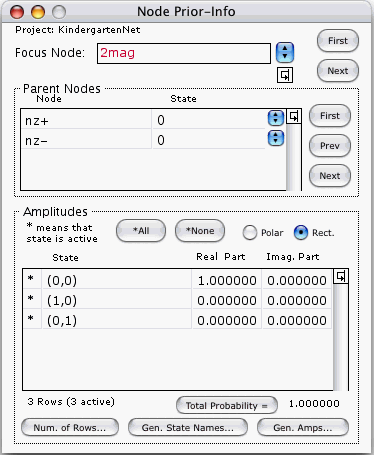

This window allows you to define, view, and modify the transition matrix associated with each node of the graph.
At any given time, the window refers to only one node, the one whose name appears in red. We'll call it the focus node. You may change the focus node by either of 3 methods:
This field gives the name of the focus node in red. The field can be edited directly by the user. If you enter into this field a node name that is longer than the box surrounding the field, the name will scroll automatically to show the last character typed. This scrolling may hide some of the first characters of the node name. Use the left-arrow key to move the insertion-point cursor (a blinking vertical line, like the letter "I") to the left, the right-arrow key to move it to the right, the up-arrow or HOME key to move it to the beginning of the node name, the down-arrow or END key to move it to the end of the node name.
Besides appearing in this window, in red, the name of the focus node also appears in the Main Window, directly beneath the icon of the focus node. One can edit this name either where it appears in the Node Prior-Info. window, or where it appears in the Main Window. Changing one occurrence will automatically change the other.
The box entitled "Parent Nodes" contains a table that specifies one of the possible input states of the focus node. None of the cells of this table can be edited directly by the user. However, the input state can be varied by using the First and Next buttons to the right of the table or by using the popups in each row of the table.
The box entitled "Amplitudes" contains a table that displays the transition amplitudes of the focus node when the input state is the one given in the Parent Nodes box.
The second column of the table lists the names of all the states of the focus node. These names can be edited directly by the user.
The first column tells which states are active. Active states are indicated by a star (*) and inactive ones by a blank. Clicking on a cell of the first column will toggle the cell's contents between blank and star.
The last two columns of the table give the complex amplitudes of the states. These amplitudes can be edited directly by the user. Alternatively, one can edit them with either the Generate Amplitudes... button or the Import/Amplitudes... menu item. (The Generate Amplitudes... button is discussed below. The Import/Amplitudes... menu item is discussed in the section entitled "Import".)
Let [C1,C2] be the set of all cells contained within a rectangle with cells C1 and C2 as opposite (top-left and bottom-right) corners. Let U be the set of all cells in the second, third and fourth columns. To select more than one cell, you will need to use the SHIFT key. You can select any subset [C1,C2] of U in one of 2 ways.
If
then all cells in set [initial anchor, final anchor] will be selected.
Alternatively, if
then all cells in set [initial anchor, final anchor] will be selected.
Pressing the Number of Rows... button opens the Number Of Rows window. This window allows you to change the number of rows of the Amplitudes Table. See the section entitled "Number Of Rows".
Pressing the Generate State Names... button opens the Generate State Names window. This window generates new names for the states of the focus node. These names appear on the second column of the Amplitudes Table. See the section entitled "Generate State Names".
Let R be the number of rows of the Amplitudes Table, and let Z1, Z2, ...ZR be the complex amplitudes given by that table.
Pressing this button calculates Pr = |Z1|2 + |Z2|2 +... |ZR|2,
and displays it to the right of the button.
If Quantum Fog is not certain that the value being displayed for Pr is up-to-date, it will erase the value and show a blank. Better to display nothing than to display an erroneous value. If no value for Pr is currently showing and you wish to see one, just press the Total Probability button. Quantum Fog will then re-calculate Pr and post it.
Pr will usually be very close to one. After all, it represents the probability that any state of the focus node will occur when the input state is as given. However, one can construct nets (see the section entitled "Parameters Of Beam-Splitter" for an example) that will always give correct physical predictions even though some of their Pr's are not one. (By physical predictions we mean the information contained in the Node Probs., Bi-node Probs. and Stories windows).
The effect of pressing the Generate Amplitudes... button depends on the node-type of the focus node.
If the focus node is a Custom node, nothing happens.
If the focus node is of type T, where T=
then a window entitled "Parameters Of T" appears.
These windows allow you to specify certain parameters which depend on the node-type, parameters which are sufficient to specify a transition matrix for the focus node. Upon dismissing these windows with an OK, the computer changes the transition matrix stored in memory for the focus node.
See the section entitled "Reordering Items In A List".